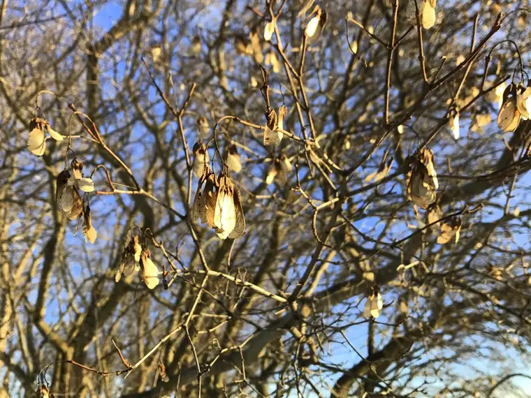
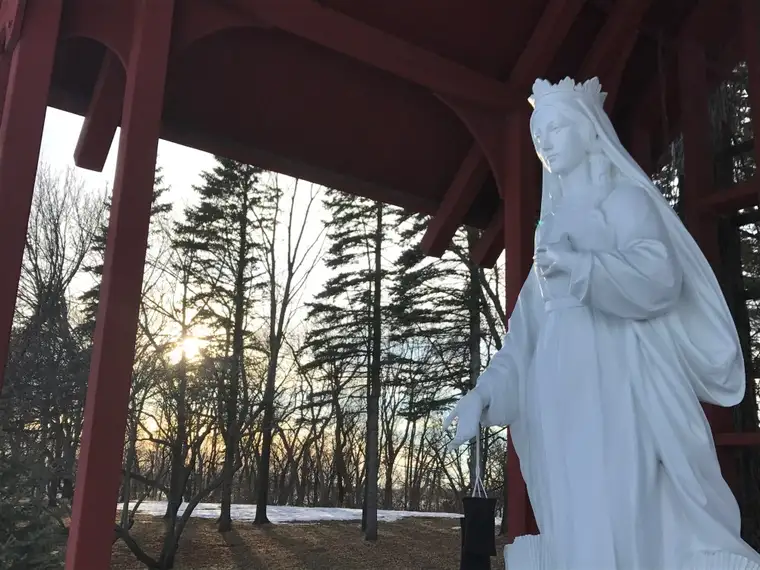

“Without solitude, it is virtually impossible to live a spiritual life.” – Henri Nouwen
Funny how it came together. I was just returned from my cyclical stay at the Carmel of Mary Monastery, and as I opened my recently purchased book, “The Spiritual Life: Eight Essential Titles,” by Henri Nouwen, the heading of the next chapter quietly mocked me: “Solitude.”
I’d just returned from one of the most peaceful places I’ve ever experienced, and now, Nouwen was going to tell me the gift of what I’d just left. He was going to teach me what I probably should have had in mind driving onto the cloister property, but now would learn while looking in the rear-view mirror.

Of course, I sensed so much of it while on those lovely grounds, but Nouwen has an exquisite way of describing the spiritual life, and I knew he would bring me further in yet.
And of course, I knew he would challenge me, which he did. For in speaking about solitude, Nouwen spoke first of how difficult it is for us, in our noisy world, to truly achieve, as well as saying that without it, we cannot live a spiritual life.
“Entering a private room and shutting the door…does not mean we immediately shut out all our inner doubts, anxieties, fears, bad memories, unresolved conflicts, angry feelings and impulsive desires,” he explains. “On the contrary, when we have removed our outer distractions, we often find that our inner distractions manifest themselves to us in full force.”

One of the things about my visits to Carmel of Mary, which have become blessedly routine, is that I have never gone there without a project in hand. I could not imagine allowing myself to visit there truly to retreat, and go quiet. When I am at Carmel, it’s because my life has spilled over and I need time away to sort through everything and really knuckle down on whatever project is demanding my attention.
Yes, I rise early for Mass. And yes, it is wonderfully peaceful and quiet. Generally, I am very productive there, and it is a relief to know that I have a place like this to go to when I’m overwhelmed.

But honestly, I’ve never gone there just to quiet down without some mission in mind. I just don’t think I’d feel deserving, for one. How could I justify just taking time out for my own spiritual edification?
No, I go there with a bag of books ready to make some serious dents in my “to do” list. I know it’s a gift to even have this chance at all, and I am so grateful. But I also sense that someday, I really need to go there and not have a project in hand.
Like Nouwen hints at, such a prospect is a little frightening. The thought of planning a visit there and bringing along little more than my thoughts, with only plans to really listen to God’s voice, brings about a slight feeling of dread.
Please don’t get me wrong. I am someone who loves the quiet. I am more comfortable with it, I think, than most. But there is a limit to my comfort level with it, and yet I feel Nouwen urging me on.
“Once we have committed ourselves to spending time in solitude,” he says, “we develop an attentiveness to God’s voice in us.”
At first, he says, it may seem little more than “time in which we are bombarded by thousands of thoughts and feelings that emerge from hidden areas of our mind.”
In the beginning, he says, “solitude seems so contrary to our desires that we are constantly tempted to run away from it.” It is a matter of discipline, he says. When we stay with it, he continues, “in the conviction that God is with us even when we do not yet hear him, we slowly discover that we do not want to miss our time alone with God.”
Then, he says something profound. “We realize that a day without solitude is less ‘spiritual’ than a day with it.”
I can’t help but think of Adoration. I didn’t just jump right into it. I approached it slowly, hesitantly. At first, it felt strange, odd. Is that really the body and blood, soul and divinity of God’s dearly beloved son, our Lord Jesus Christ? Or is it just a piece of bread. I mean, really?
But then I returned, for a period during Lent only. And something happened. I began to feel that yes, it truly is Jesus there. And I became more familiar with the feeling. I no longer questioned it and it was then that the transformation happened. Not right away, but eventually.
Recently, I had been at Adoration nearly an hour when I realized I had not really even gazed at the Eucharistic host. Yes, I had bowed to our Lord and I had been conversing with him all hour, but…I didn’t need to look, to strain my eyes to believe. I could feel his presence that whole time and I just trusted in it.
Nouwen says that no matter how much we may resist solitude, this alone time with God, intuitively, we know that it is important. “We even start looking forward to this strange period of uselessness,” he says. Yes, it’s true.
“As we empty ourselves of our many worries,” he adds, “we come to know not only with our mind but also with our heart that we were never really alone, that God’s Spirit was with us all along.”
It is here where I pause, and maybe, dare I say, let a tear roll down my cheek. I don’t know if there is anything so beautiful as what is said there in that line I just typed. “We came to know…that we were never really alone.”
This is it. This is what the spiritual life really boils down to: that reality right there. “We were never really alone.” Here is the sweet consolation, the prize of a life spent groping for God. Though we can go long periods and not sense his presence, there comes a time, one precious moment, when we realize God never abandoned us. Ever. Not for a moment. And he never will.
Lent is coming, and each year, I seem to look more and more forward to it, because in Lent, we are given permission to seek out the quiet places where Jesus can begin whispering in our ears.
This year, like no other, it seems I am practically running to Ash Wednesday. I cannot wait to receive the ashes on my forehead as the marked reminder it’s time to pull back from the noise and begin to retreat inward; not to hide from the world, but to become more fully alive in it.
But we need the time, more than we can possibly realize. We need this excuse. We need to see that it is not something to dread, but a gift.
Solitude is our chance to know the love of our life better, and in turn, love others better. It is not something we should put off for a rainy day. It is an essential, a “sine qua non,” of the spiritual life. It’s as utterly essential as the beautiful realization that God has been with us, every single moment of our lives.
Q4U: How will you approach solitude in the coming weeks? What about the idea of solitude scares you, draws you closer to our Lord?